Categorising Urban Areas
Leveraging Web Data to Monitor Changes in Corporate-Government Interlocks in India -
A. Sen, A. Agarwal, A. Guru, A. Choudhuri, G. Singh, I. Mohammed, J. Goyal, K. Mittal, M. Singh, M. Goel, S. Gupta, S. Pathak, V. Madapur, and A. Seth.
ACM COMPASS 2018
Population Distribution in Districts
How Urbanised are these cities?
- Chennai has the highest percentage of its population living in urban and periurban grids Bangalore has the least
- All cities except Bangalore have more than 50 % of their population living in urban and periurban grids
- Except for Bangalore and Gurgaon, all other districts have approximately 3/4th of their population living in urban and periurban grids.
How Densely Populated are they?
- We can observe that Mumbai is most densely populated compared to other districts, and Gurgaon is the least densely populated.
- Mumbai has the highest population density, and also 3/4th of its population lives in urban and periurban grids which imply that these grids of Mumbai are very crowded and the rural grids are sparsely populated
- Gurgaon has the least population density, and only around 50% of its population resides in urban and periurban grids which imply that these grids are sparsely populated in Gurgaon, and a significant population of Gurgaon lives in rural grids too
Is The Population Distribution Uniform?
- Bangalore has highest gini index implying population distribution is highly localised in some grids
- Kolkata has least gini index (¡0.1) implying the population is almost uniformly distributed in grids
- Bangalore, Delhi and Gurgaon have significantly high gini index implying population in these cities is not that uniformly distributed as compared to Chennai, Hyderabad, Kolkata Mumbai having gini index around 0.1
- Population Density in Bangalore, Chennai, Delhi, Hyderabad Kolkata monotonically increases as we move from C1 to C4 as expected but decreases in C5 in Bangalore and Chennai, this may be due to underreporting at the time of census as C5 grids contain areas like slums and jhuggis predominantly occupied by the migrant population.
- Almost Uniform Population Density is observed among C1-C5 grids in Chennai, Kolkata Mumbai, implying that population is distributed uniformly, thus every grid class holds equal importance in these districts.
Hover over any image to enlarge


Population Distribution in Districts - Maps
Accessibility of Amenities
What are the nearest amenity distances for different parts of the city?
- Except Hyderabad, all districts have worst accessibility of amenities in C1 grids (C4 is worst for Hyderabad) which is justified as its non residential class of grids.
- C3 grids have highest accessibility of amenities in Kolkata, C5 in Chennai and Hyderabad, and C4 in other districts. This is justified since these are considered to be residential grids.


Overall in the city, what are the nearest amenity distances?
- Delhi, Gurgaon seems to have worst accessibility of amenities
- Amenities are most accessible in Chennai
- Connectivity is worse than other amenities in all the cities
- All amenities except connectivity is within 500 metres

Which cities have the worst parts that are far away from essential amenities?
- Delhi has the highest percentage of outlier grids, implying the nearest amenity distance distribution has high variation, i.e. amenities in some grids are very near and in someare very far
- Hyderabad has the least percentage of outlier grids, implying the nearest amenity distance distribution has low variation, i.e. amenities in most grids lie within a small range

What are these outliers and where do they lie in different parts of the city?
- Most of the outliers lie on district boundary
- Most of the identified areas are non residential, they are industrial areas, or wildlife parks etc.

Accessibility of Amenities - Maps
Availability of Amenities
How many amenities are within accessible distance from the different parts of the city?
- Except Hyderabad, Gurgaon, all districts have worst of amenities in C1 grids (C2 is worst for Hyderabad and C3 is worst for Gurgaon) which is justified as its non residential class of grids.
- C5 grids have highest availability of amenities in Hyderabad, Chennai, Delhi and Kolkata, and C4 for rest of the districts. This is justified since these are considered to be residential grids.
Overall as a city, what are the number of amenities within accessible distance?
- Delhi seems to have worst availability of amenities
- Availability of amenities is best in Mumbai
- Connectivity is worse than other amenities in all the cities
Availability of Amenities - Maps
Population load on Amenities
- Cities having less load like Gurgaon imply that these cities have sufficient amenity infrastructure as compared to other cities
- Mumbai has high population load on amenities and it also had high population density in combined grids, this implies that the amenity infrastructure is far behind the demand thus are strained
- Cities like Bangalore which didn’t have that high population density nor that much percentage of population living in combined grids and still having highest load on amenities imply the amenity infrastructure is worse here
- Education and Health were least strained amenities overall which is good since these are basic amenities
- Connectivity is highly constrained which may be due to incomplete data on google places
- All districts except Delhi (least load in C2 grids) have least overall population load in grids C4 (Chennai, Gurgaon, Kolkata, Mumbai) or C5 (Bangalore, Hyderabad). Thus residential grids bear least load in all districts except Delhi
- All districts except Delhi (max load in C5 overall) and Hyderabad (max load in C4 overall), bear max load overall in grids C1 (Gurgaon, Kolkata, Mumbai), C2 (Chennai) or C3 (Bangalore). Thus non residential grids bear maximum load in all districts except Delhi and Hyderabad
Hover over any image to enlarge

 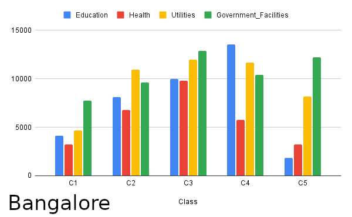
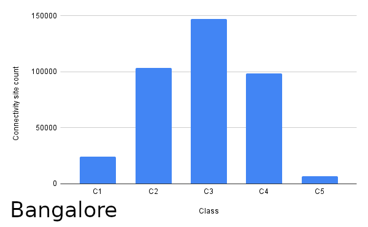
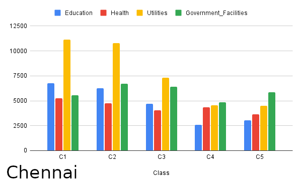
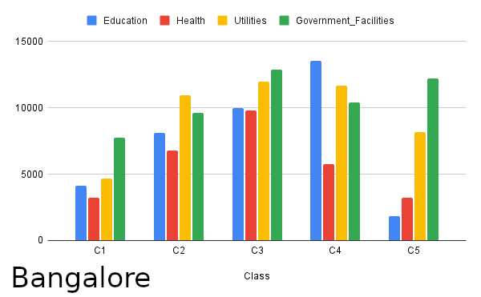
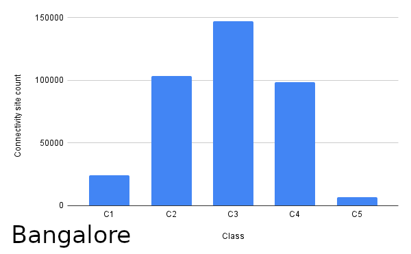
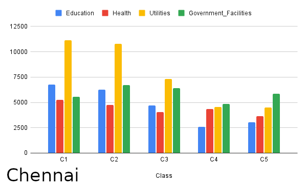
 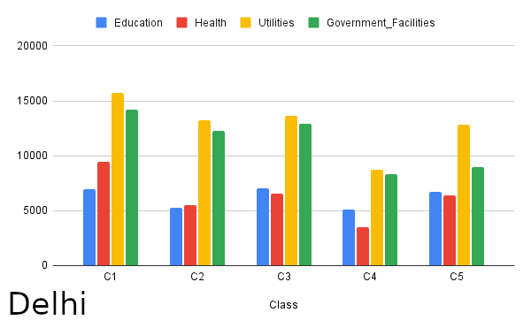
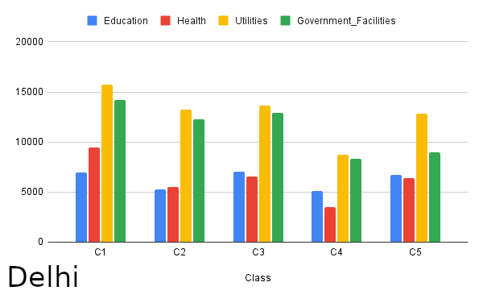


 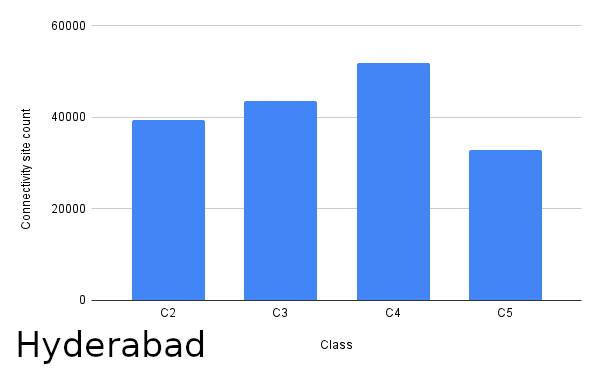
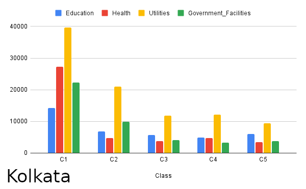
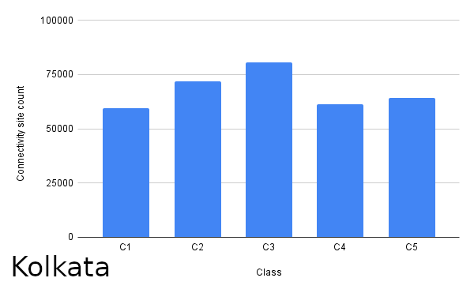
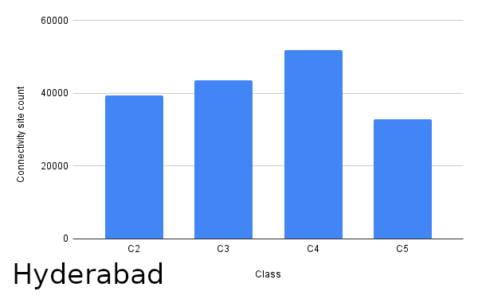
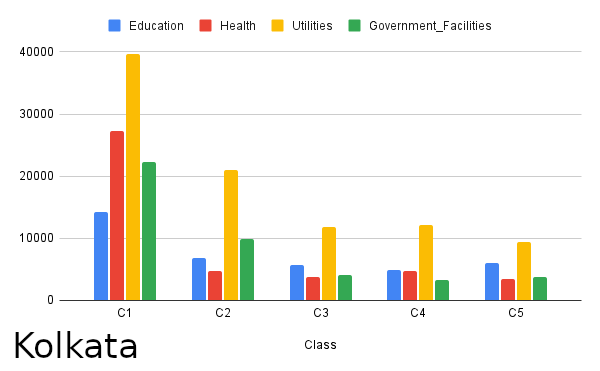
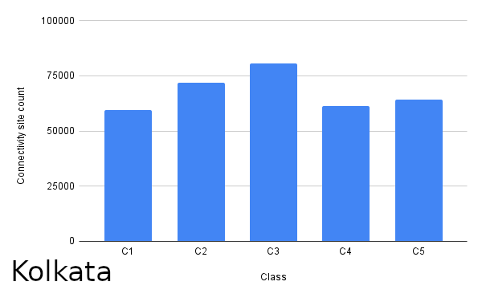